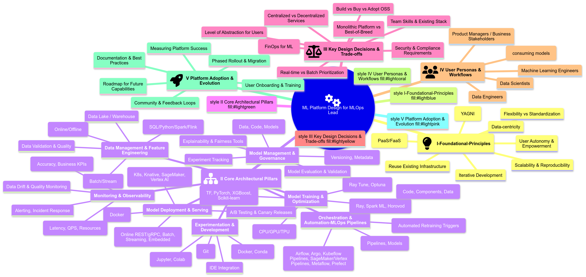

ML Platforms: How to¶
¶
The MLOps Lead’s Guide to Designing & Operationalizing Machine Learning Platforms¶
Preamble: From Bespoke Solutions to Scalable Ecosystems
The era of siloed, manually-managed machine learning projects is rapidly giving way to the necessity of robust, scalable, and maintainable Machine Learning Platforms. As organizations like Zillow, Shopify, Uber, LinkedIn, Monzo, Coveo, Zomato, GreenSteam, and innovative ventures like Didact AI demonstrate, the ability to efficiently develop, deploy, and operate ML models is a significant competitive differentiator. This guide synthesizes their journeys, combined with MLOps best practices (as outlined by Google Cloud and AWS), to provide a thinking framework for Lead MLOps Engineers tasked with building or evolving such platforms. Our focus is on actionable insights, architectural patterns, critical trade-offs, and the “why” behind the “what.”
Chapter 1: The Imperative for an ML Platform - Motivations & Core Principles
The “Why”: Addressing Pervasive Challenges
Fragmentation & Inefficiency: DS/MLEs using disparate tools, leading to knowledge silos, difficult collaboration, and duplicated effort.
The Prototype-to-Production Chasm: Significant friction and engineering effort to move models from research/notebooks to reliable production services. This includes code rewriting, dependency management, and infrastructure concerns.
Scalability Bottlenecks: Training on desktop-sized data, inability to handle production load, manual scaling processes.
Lack of Standardization & Reproducibility: Inconsistent data pipelines, “it works on my machine” issues, difficulty tracking experiments and model versions.
Operational Blindness: Poor monitoring of models in production, leading to silent failures or performance degradation (Google MLOps).
Slow Iteration Cycles: Manual handoffs and lack of automation significantly slow down the ability to update models or deploy new ones (All).
“Hidden Technical Debt in ML Systems”: The complexity surrounding ML code (data dependencies, configuration, monitoring, etc.) often outweighs the ML code itself.
Core Principles for ML Platform Design
Data is King: Accessible, clean, standardized data provides the biggest marginal gain. Platform must facilitate robust data management and feature engineering.
Empower Data Scientists & MLEs (Autonomy): Enable end-to-end workflows, from experimentation to deployment, minimizing handoffs.
Flexibility: Accommodate diverse ML frameworks, libraries, and problem types. Avoid overly prescriptive tooling where possible.
Reuse Over Rebuild: Leverage existing robust infrastructure (data stacks, microservice platforms, CI/CD) and focus platform efforts on the ML-specific “delta.”
PaaS/FaaS is Better than IaaS: Abstract away infrastructure management. Utilize managed services for compute, storage, and scaling to free up ML teams.
ELT is Better than ETL: Clear separation of raw data ingestion and transformation promotes reliability and reproducibility.
Standardization & Reproducibility: Enforce consistent environments, versioning (code, data, models), and workflows.
Scalability & Elasticity: Design for on-demand resource provisioning and automatic scaling (Shopify Ray on K8s, AWS MLOps, Zillow Knative/KServe).
Modularity & Composability: Break down the ML lifecycle into reusable components/pipelines
Keep it Simple: Don’t over-engineer. Focus on current needs but allow for future evolution.
Chapter 2: Anatomy of a Modern ML Platform - Key Components & Capabilities
This chapter outlines the essential building blocks, drawing parallels across the provided examples.
Component/Capability |
Description & Key Functions |
Examples from Provided Articles |
|---|---|---|
1. Data Management & Feature Engineering Layer |
Ingesting, storing, transforming data for ML. Creating, sharing, and serving features for training and inference. |
Uber Michelangelo: Shared Feature Store (HDFS/Cassandra), DSL for transformations. Zomato: Real-time (Flink -> Redis) & Static (Cassandra) Feature Stores. Shopify Merlin: Inputs from Data Lake/Pano (feature store). Didact AI: DuckDB/Redis feature store, complex multi-source FE. Monzo: SQL-based FE in BigQuery (dbt). |
2. Experimentation & Development Environment |
Tools for interactive data exploration, model prototyping, and collaborative development. |
LinkedIn DARWIN: JupyterHub on K8s, multi-language, SQL workbooks. Shopify Merlin: Jupyter in Merlin Workspaces (Ray on K8s). Monzo: Google Colab (prototyping only). GreenSteam: Jupyter in Docker. AWS MLOps: SageMaker Studio notebooks. |
3. Model Training Orchestration & Execution |
Systems for defining, scheduling, and running model training jobs, often distributed, with hyperparameter tuning. |
Uber Michelangelo: Distributed training, custom model types. Shopify Merlin: Ray Train, Ray Tune on K8s. Monzo: Custom containers on Google Cloud AI Platform. Zomato: MLFlow triggering SageMaker. GreenSteam: Argo Workflows. AWS MLOps: SageMaker Pipelines, Training Jobs. Coveo: Metaflow. |
4. Model Registry & Artifact Store |
Centralized repository for versioning, storing, and managing trained models, their metadata, and associated artifacts (e.g., training data snapshots). |
Uber Michelangelo: Cassandra-based model repo. Monzo: Custom Model Registry. Zomato: MLFlow. GreenSteam: Neptune.ai. Didact AI: Local disk + S3. AWS MLOps: SageMaker Model Registry. Google MLOps: Model Registry. |
5. Model Evaluation & Validation |
Tools and processes for assessing model performance against metrics, business KPIs, and fairness/bias considerations. |
Uber Michelangelo: Accuracy reports, tree viz, feature reports. Google MLOps: Offline & online validation, data/model validation in pipelines. GreenSteam: Human-in-the-loop audit reports. |
6. Model Deployment & Serving Layer |
Infrastructure and workflows for deploying models as batch prediction jobs or real-time inference services. |
Uber Michelangelo: Offline (Spark) & Online (custom serving cluster). Shopify Merlin: Batch on Ray (planning online). Monzo: Python microservices on AWS (production stack), AI Platform for batch. Zomato: SageMaker endpoints, ML Gateway (Go). GreenSteam: FastAPI microservices. Zillow: KServe/Knative. |
7. Monitoring & Observability |
Tracking system health, model performance, data drift, and concept drift in production. Alerting on issues. |
Uber Michelangelo: Live accuracy monitoring. Monzo: Grafana (system), Looker (model perf), dbt-slack (features). Zomato: Grafana. GreenSteam: Kibana, Sentry. Google MLOps: Continuous monitoring. Didact AI: Custom Python reports, Feature Explorer. |
8. Workflow Orchestration & MLOps Pipelines |
Automating the end-to-end ML lifecycle, including CI/CD for models and pipelines, and CT. |
Google MLOps: Levels 0, 1, 2 detailing pipeline automation. AWS MLOps: SageMaker Projects, Pipelines, CodePipeline. Shopify Merlin: Airflow/Oozie. Monzo: Airflow. GreenSteam: Argo. Coveo: Prefect. |
9. Metadata & Artifact Tracking |
System for capturing, storing, and querying metadata about all aspects of the ML lifecycle (experiments, data, models, pipeline runs). |
Google MLOps: ML Metadata & Artifact Repository. LinkedIn DARWIN: DataHub for resource metadata. Neptune.ai / MLFlow are common tools. |
10. Governance & Compliance |
Ensuring security, privacy, auditability, and responsible AI practices throughout the platform. |
LinkedIn DARWIN: Audit trails, fine-grained access control. Google MLOps: Handling model fairness, data privacy. AWS MLOps: Secure multi-account setup, IAM. |
Illustrative High-Level ML Platform Architecture: 
Chapter 3: MLOps Maturity & Pipeline Automation
MLOps Level 0: Manual Process
Characteristics: Script-driven, interactive, manual handoffs between DS and Ops, infrequent releases, no CI/CD, focus on deploying model as prediction service, lack of active monitoring. (Google MLOps)
Challenges: Model decay, slow iteration, training-serving skew. (Google MLOps)
GreenSteam’s early days and Zomato pre-platform exemplify this.
MLOps Level 1: ML Pipeline Automation (Continuous Training - CT)
Goal: Automate the ML pipeline for CT, achieve continuous delivery of model prediction service. (Google MLOps)
Characteristics: Orchestrated experiment steps, CT in production, experimental-operational symmetry, modularized/containerized code. (Google MLOps)
Additional Components: Automated Data Validation, Automated Model Validation, Feature Store (optional but beneficial), Metadata Management, Pipeline Triggers (on-demand, schedule, new data, model decay). (Google MLOps)
AWS MLOps Initial & Repeatable Phases: Focus on experimentation (SageMaker Studio) then automating training workflows (SageMaker Pipelines), model registry. Emphasis on multi-account strategy for dev/tooling/data lake.
Shopify Merlin’s initial focus on training and batch inference aligns here.
MLOps Level 2: CI/CD Pipeline Automation
Goal: Robust, automated CI/CD system for rapid and reliable updates to ML pipelines themselves. (Google MLOps)
Characteristics & Stages:
Development & Experimentation (source code for pipeline steps).
Pipeline Continuous Integration (build, unit/integration tests for pipeline components).
Pipeline Continuous Delivery (deploy pipeline artifacts to target env).
Automated Triggering (of the deployed pipeline for CT).
Model Continuous Delivery (serve trained model as prediction service, progressive delivery - canary, A/B).
Monitoring (live data stats, model performance).
AWS MLOps Reliable & Scalable Phases: Introduces automated testing, pre-production/staging environments, manual approvals for promotion, templatization (SageMaker Projects) for onboarding multiple teams/use cases, advanced analytics governance account.
Zillow’s focus on “service as online flow” and automatic deployments points to this level.
Chapter 4: Designing Your ML Platform - A Lead’s Decision Framework
Understanding Your Context & Constraints (“Reasonable Scale” - Coveo)
Team Size & Skills: DS, MLE, Data Engineers, Ops. Autonomy vs. specialized roles.
Data Volume & Velocity: TBs vs PBs, batch vs real-time.
Number of Models & Use Cases: Dozens vs. hundreds.
Budget & Resources: Affects build vs. buy, managed vs. self-hosted.
Existing Infrastructure: Leverage or rebuild? (Monzo principle)
Time-to-Market Pressure.
Key Architectural Choices & Trade-offs
Build vs. Buy vs. Adopt OSS:
Build: Full control, custom fit, high initial cost/effort (Uber often builds significantly).
Buy (Commercial MLaaS/Point Solutions): Faster setup, vendor support, potential lock-in, cost (Coveo advocates PaaS).
Adopt OSS: Flexibility, community, no license cost, self-management overhead (Shopify, Zomato, GreenSteam, LinkedIn heavily use OSS like Ray, Kubeflow, MLFlow, Flink, Argo, Neptune).
Monolithic Platform vs. Best-of-Breed Integration:
Monolithic (e.g., SageMaker, Vertex AI): Integrated experience, potentially less flexibility.
Best-of-Breed: Choose top tools for each component, integration challenge (Monzo, Coveo lean this way).
Degree of Abstraction for Users:
Low-Code/No-Code vs. Code-First: Catering to citizen DS vs. expert MLEs (LinkedIn DARWIN aims for both).
Shopify Merlin: Python-centric, aiming to abstract K8s/Ray complexities.
Zillow: Pythonic “service as online flow” to abstract web service concepts.
Centralized vs. Decentralized Components:
Feature Store: Centralized (Uber) vs. federated.
Model Registry: Typically centralized.
Compute: Shared clusters vs. dedicated per-user/project (Shopify Merlin Workspaces).
Data Ingestion & Processing Strategy for ML:
ELT for raw data, then ML-specific transformations.
Real-time feature computation (Flink - Zomato, Samza - Uber).
Batch feature computation (Spark - Uber, dbt+BigQuery - Monzo).
Serving Strategy:
Online (REST APIs, gRPC) vs. Batch vs. Streaming vs. Embedded.
CPU vs. GPU for inference.
Serverless (Knative - Zillow) vs. Provisioned.
Environment Management:
Docker/Containers are standard (GreenSteam, Shopify, AWS MLOps).
Kubernetes for orchestration (Shopify, LinkedIn DARWIN, Zillow).
Dedicated workspaces/sandboxes (Shopify Merlin, LinkedIn DARWIN).
User Experience (UX) and Developer Productivity
Target Personas: Who are you building for? (DS, MLE, Analysts).
Seamless Workflow: Minimize context switching. (LinkedIn DARWIN).
Reproducibility: Versioning data, code, models, environments. (GreenSteam, Monzo).
Collaboration Features: Sharing notebooks, features, models. (LinkedIn DARWIN).
Ease of Onboarding: Templates, CLIs, SDKs. (Shopify Merlin Projects, AWS SageMaker Projects).
Iterative Platform Development
Start with core needs (e.g., training, batch inference - Shopify).
Phased rollout based on MLOps maturity (AWS).
Gather user feedback continuously (LinkedIn DARWIN User Council).
Chapter 5: Lessons Learned from the Trenches
Start Simple, Iterate (GreenSteam YAGNI): Avoid over-engineering for future unknowns.
Embrace Docker/Containers Early (GreenSteam): Solves dependency and reproducibility issues significantly.
SQL is Powerful for Feature Engineering (Monzo, Coveo): Leverage the power of data warehouses for transformations before ML-specific steps. dbt is a key enabler.
Managed Services are Your Friend (Coveo, Monzo, Zomato): Reduce operational burden, especially at “reasonable scale.”
Abstract Complexity from Users (Shopify, Zillow): Data scientists should focus on ML, not K8s YAML or web server internals. Pythonic SDKs are favored.
Testing ML is Hard (GreenSteam): Unit tests for ML code can be tricky. Smoke tests on full datasets (with fast hyperparams) can be more effective.
Human-in-the-Loop is Often Unavoidable (GreenSteam): Especially for model auditing and ensuring business alignment, despite automation efforts.
Feature Stores are Foundational: They solve training-serving skew and promote feature reuse (Uber, Zomato).
MLFlow is a Popular Starting Point for Experiment Tracking & Registry (Zomato).
Ray is Gaining Traction for Distributed Python ML (Shopify).
Orchestration is Key: Airflow, Argo, Prefect, Metaflow, SageMaker/Vertex Pipelines are essential for automating complex workflows.
Monitoring is Multi-faceted: System health, data drift, model performance, business KPIs.
Culture of Autonomy and Ownership: Platforms should empower teams, not create new bottlenecks.
Chapter 6: The Future of ML Platforms
Greater Abstraction & Automation: Further reduction of boilerplate and infrastructure management.
Convergence of Data & ML Stacks: Tighter integration between data warehouses/lakes and ML training/serving.
Rise of Real-time/Online Learning Capabilities: Platforms need to better support models that adapt continuously.
Specialized Hardware Acceleration becoming Mainstream: Easier access and management of GPUs/TPUs.
Enhanced Model Governance & Responsible AI Features: Built-in tools for fairness, explainability, privacy.
Democratization through Low-Code/No-Code Interfaces: While still providing power for expert users.
OSS Continues to Drive Innovation: With enterprise-grade managed offerings built on top.
ML Platform Design - MLOps Lead’s Mind Map (Mermaid)
